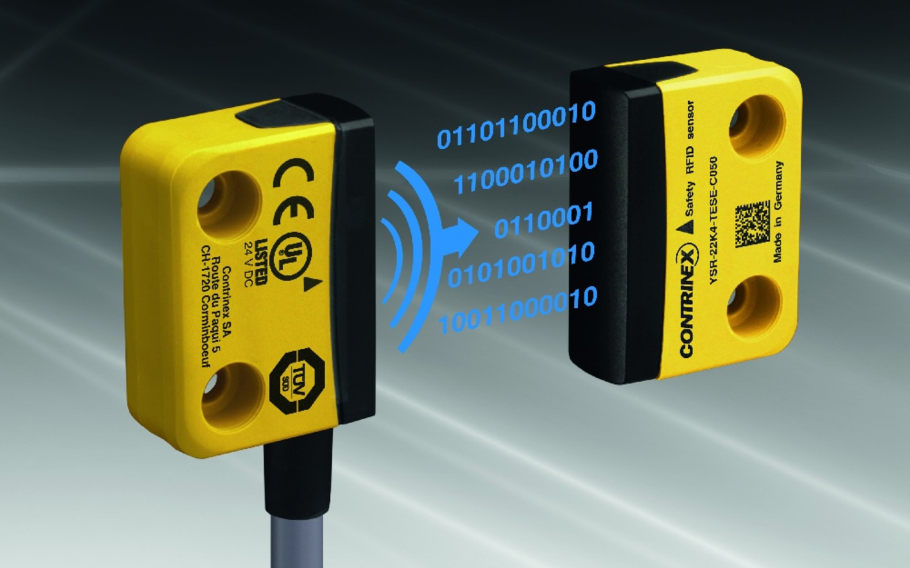
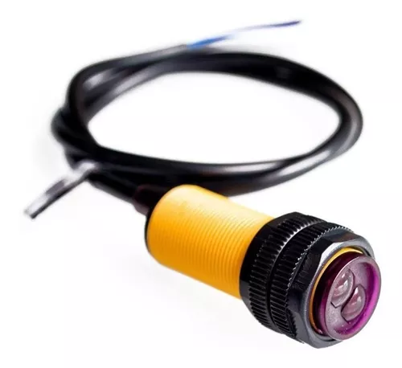
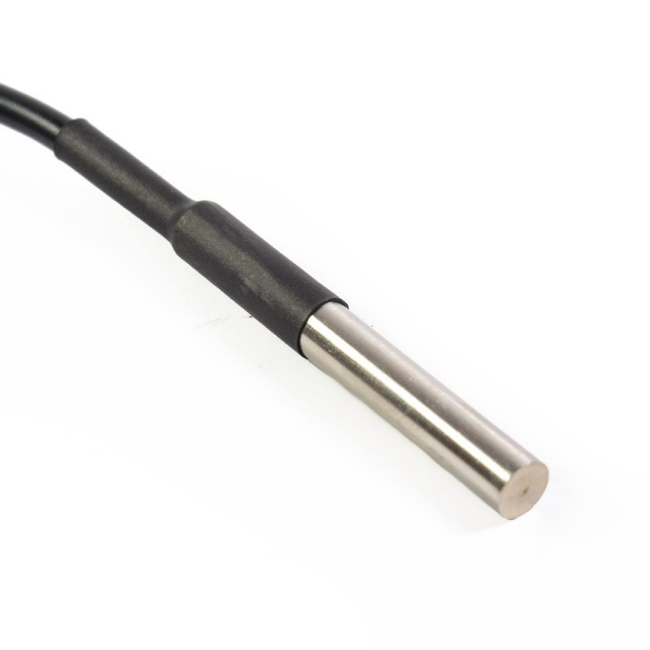
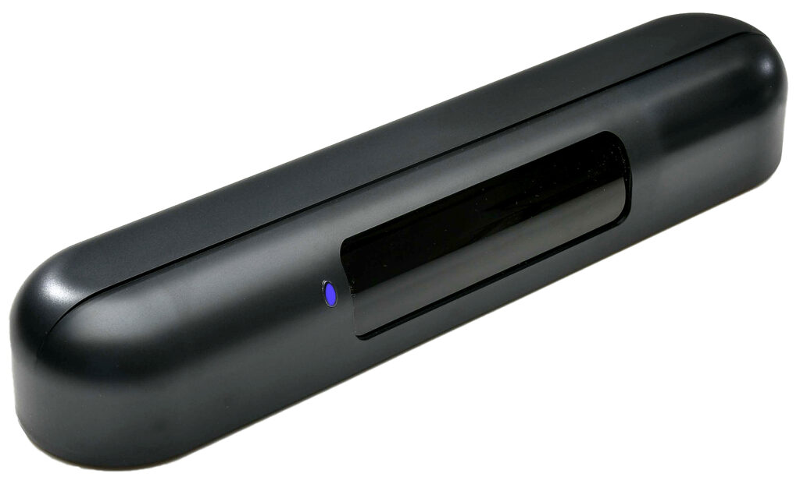
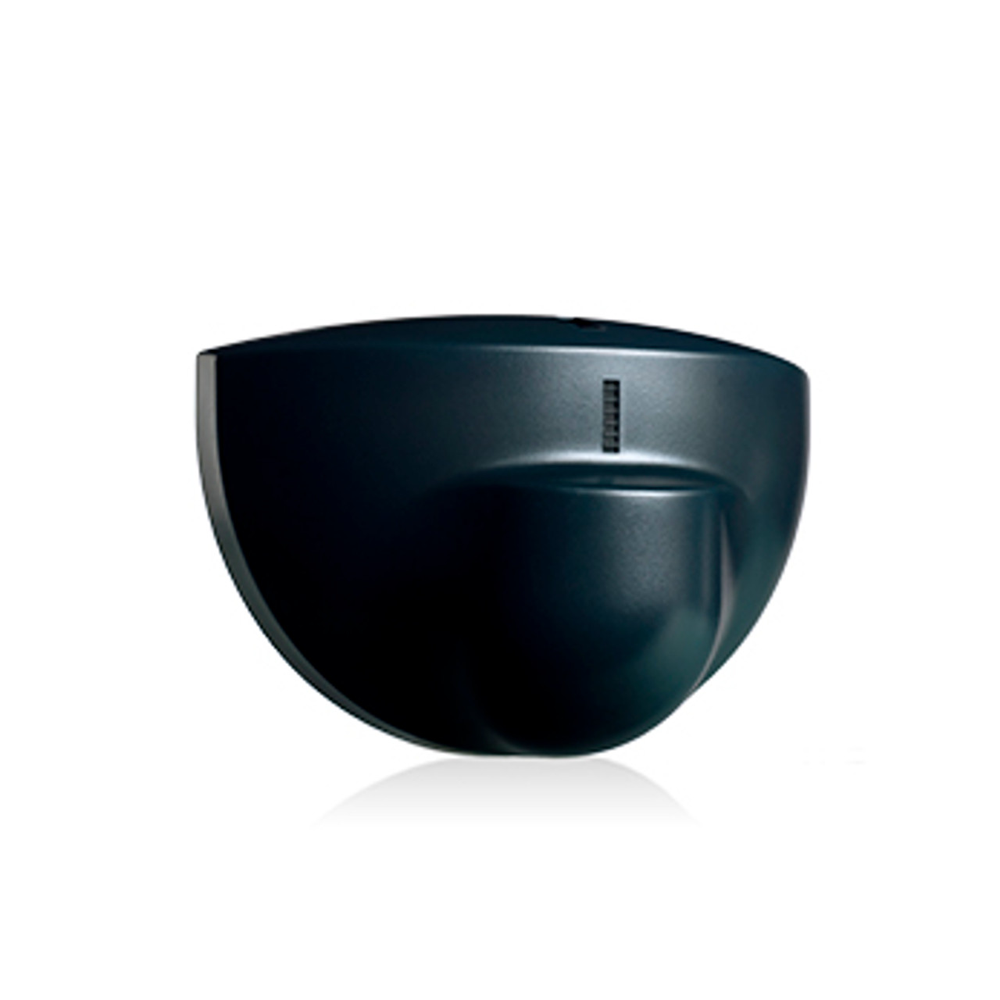

Sensores para Puertas Automáticas
Explore nuestra gama de sensores diseñados para optimizar la eficiencia y seguridad de sus puertas automáticas. Cada sensor ha sido cuidadosamente seleccionado para ofrecer un rendimiento superior y una durabilidad excepcional.
Sensor de Movimiento
| Tipo | Movimiento Infrarrojo |
|---|---|
| Clase | A |
| Descripción | Sensor de movimiento infrarrojo para puertas automáticas, ofrece alta precisión y fiabilidad. |
| Rendimiento | Alcance de detección hasta 10 metros |
| Datos Interesantes | Compatible con la mayoría de sistemas de control de acceso |

Sensor de Seguridad
| Tipo | Seguridad Activa |
|---|---|
| Clase | B |
| Descripción | Sensor de seguridad activa para evitar el cierre accidental de puertas automáticas. |
| Rendimiento | Detección de obstáculos en tiempo real |
| Datos Interesantes | Fácil instalación y configuración rápida |

Sensor de Presencia
| Tipo | Presencia Microondas |
|---|---|
| Clase | C |
| Descripción | Sensor de presencia basado en microondas, ideal para puertas automáticas en áreas de alto tráfico. |
| Rendimiento | Alta sensibilidad y bajo consumo de energía |
| Datos Interesantes | Diseño compacto y duradero |

Sensor Térmico
| Tipo | Térmico Infrarrojo |
|---|---|
| Clase | D |
| Descripción | Sensor térmico infrarrojo para puertas automáticas, ideal para condiciones extremas de temperatura. |
| Rendimiento | Detección de temperatura con alta precisión |
| Datos Interesantes | Resistente a ambientes hostiles |

Sensor de Contacto
| Tipo | Contacto Eléctrico |
|---|---|
| Clase | E |
| Descripción | Sensor de contacto eléctrico para puertas automáticas, garantiza la apertura y cierre precisos. |
| Rendimiento | Alto rendimiento y durabilidad |
| Datos Interesantes | Fácil mantenimiento y baja necesidad de recalibración |

Sensor Láser
| Tipo | Láser |
|---|---|
| Clase | F |
| Descripción | Sensor láser de alta precisión para puertas automáticas, ofrece una detección rápida y efectiva. |
| Rendimiento | Detección de hasta 15 metros con alta precisión |
| Datos Interesantes | Fácil integración con sistemas existentes |